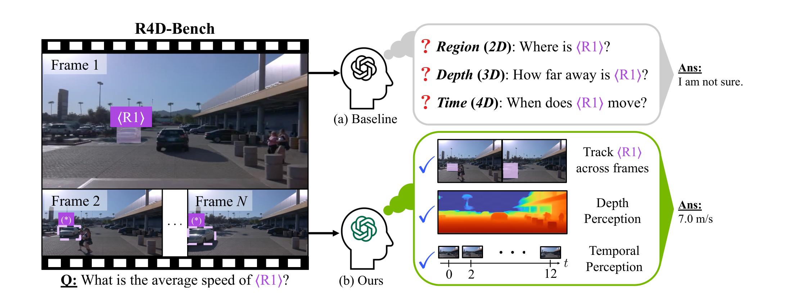
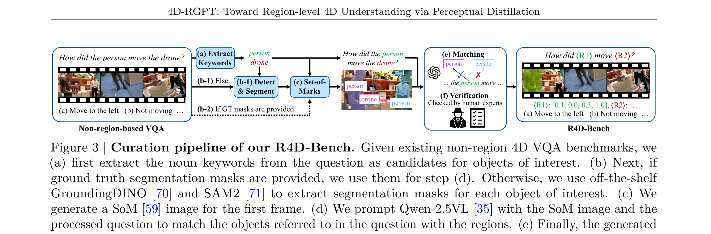
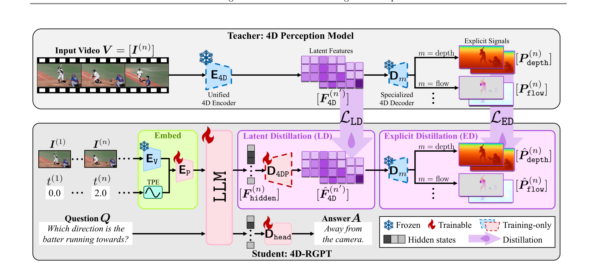
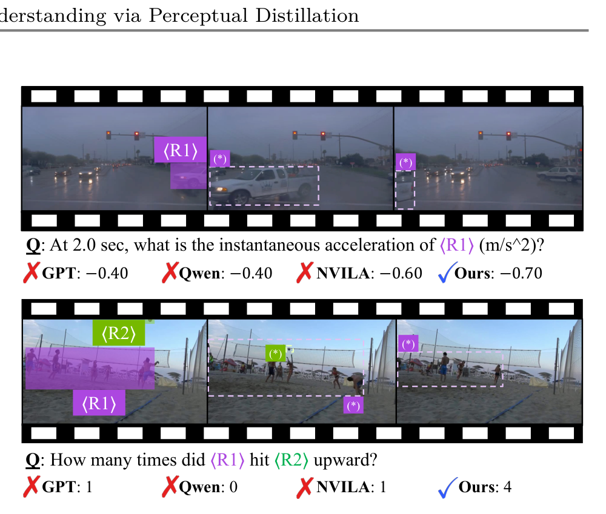
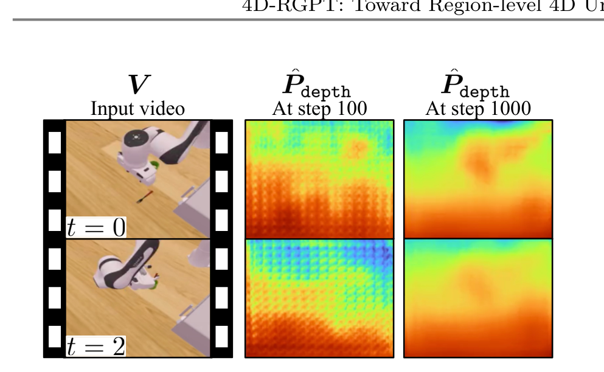

4D-RGPT 深读：怎样把“深度 + 时间”的 4D 感知蒸馏进一个多模态大模型？
导读。4D-RGPT 真正要回答的问题不是“多模态大模型能不能回答视频问题”，而是：当一个 MLLM 的视觉特征只编码了“外观”、根本没有深度与时间这两个轴时，怎样不靠外挂模块、把“4D 感知”灌进它自己的 hidden states？它的答案是 Perceptual 4D Distillation（P4D）——把一个冻结的 4D 感知专家的表征，分“潜在”和“显式”两支蒸馏进 MLLM；蒸馏模块只在训练时存在，推理时丢弃，4D 感知已经长在主干里。
{kind=link}

1. 核心问题：MLLM 为什么做不好 4D？
要回答“那辆车的平均速度是多少”，模型既要知道位移（需要深度/3D），又要知道时长（需要时间/4D）。但主流 MLLM 是在 2D 图文上训练的，视觉特征编码的是外观，既没有显式的几何，也没有时间轴。常见的补救是外挂一个深度模型做 pipeline，但那是“拼接”而非“理解”，也给不了跨区域、跨时间的联合推理。
问：那直接拿 4D 问答数据做 SFT，不就行了？
引导：注意 SFT 的监督信号是“答案 token”——它告诉模型答案是什么，却不告诉模型该如何感知深度和运动。
答：答案标签是很稀薄的监督。要从一句“away from the camera”里反推出整套深度/运动感知，等于让模型自己从近乎 one-hot 的信号里发现几何，非常低效。正如苏剑林对蒸馏的总结——大模型的中间层表征比输出标签携带丰富得多的信号 [archives/7575]，所以更好的做法是让模型去对齐一个 4D 专家的特征，而不只是对齐答案。
Takeaway：问题不是“缺 4D 数据”，而是“缺把 4D 感知写进 MLLM 表征的监督信号”。
2. 贡献拆解：作者明确提出了什么？
作者明确提出的贡献有三件：(a) 4D-RGPT，一个带 training-only 4D 感知模块、并用时间戳位置编码增强时序感的 region-level MLLM；(b) P4D（Perceptual 4D Distillation），把冻结 4D 专家的潜在与显式表征蒸馏进 MLLM 的训练框架；(c) R4D-Bench，一个面向深度感知动态场景、支持区域级提示、由“自动 + 人工核验”混合流程构建的 benchmark。
读者能进一步推断的是：这套思路的可迁移性在于“把某种专家感知蒸馏进 MLLM 主干、推理时丢弃外挂”——不只限于 4D，任何 MLLM 缺失而存在现成专家模型的感知能力（如表面法向、材质、物理）都可能照此灌入。
3. 数据集与任务：训练用什么，评测用什么？
训练用多种 3D/4D 对话数据（RoboFAC、SAT、VSTI-Bench 训练集、Wolf 等）；蒸馏的“监督”来自一个冻结的 4D 感知专家 L4P（沿用其架构与预训练权重）。评测除了已有 3D/4D VQA benchmark，还包括作者新建的 R4D-Bench。
{kind=link}

4. Pipeline：P4D 框架怎么把 teacher 灌进 student
{kind=link}

问：蒸馏模块推理时就丢了，那 4D 能力存在哪？
答：存在 MLLM 的 hidden states 里。LD/ED 的梯度经过 training-only 解码器回流进主干，把主干特征重塑成 4D-aware；推理时丢掉解码器，主干已经“会”感知深度与时间。这也是为什么训练必须让主干可训——见第 5 节的承重假设。
Takeaway：P4D 不是给 MLLM 外挂一个深度模型，而是把深度模型的“感知”蒸进 MLLM 自己的表征。
5. 模型与方法：双支蒸馏与时间戳编码
4D-RGPT 在 MLLM 之上加两类 training-only 模块：一个 4D 感知解码器 $\mathrm{D_{4DP}}$ 解出潜在 4D 特征，和若干预测头 $\mathrm{D}_m$ 解出显式信号。先把各帧 hidden state 重排到目标形状，再解码：
为补上时间轴，把采样时刻 $t^{(n)}$ 编成正弦 时间戳位置编码（TPE），加到视觉特征上再送进 projector：
为什么特征级蒸馏比 SFT 标签更能灌入 4D 感知
SFT 的监督是答案 token，信号稀薄；而蒸馏让 student 去匹配 teacher 的表征。苏剑林对蒸馏的梳理点明了这一点：大模型的中间层结果（不只是输出 logits）携带远更丰富的信号，好的蒸馏往往要同时对齐多项中间量、用多项 loss [archives/7575]。P4D 正是这样设计的——它不止学答案，而是把 teacher 的 4D 特征几何直接拓印进 MLLM 主干。
两支蒸馏损失分别在潜在空间和信号空间对齐 teacher 与 student：
为什么 latent + explicit 双支互补
潜在蒸馏给的是丰富但抽象的中间指引——塑造特征流形；显式蒸馏给的是直接、可解释、无歧义的低层监督（真实深度/光流）——把特征钉在可测量的量上。只有 LD，特征可能数值上贴近 $F^{4D}$ 却漂移成几何上无意义的东西；只有 ED，又缺少对抽象 4D 结构的引导。两者互为正则。这与“好的蒸馏通常用多项 loss”的经验一致 [archives/7575]。承重假设：蒸馏模块是 training-only、推理时丢弃，所以 LD/ED 的梯度必须真的回流重塑 MLLM 主干——若主干被冻结、只更新解码器，推理时丢掉解码器就一无所得。这条假设正是第 7 节“训练哪些模块”消融要检验的。
6. 训练细节与算力账本
| 项目 | 论文披露 | 解释 | 缺失信息 |
|---|---|---|---|
| Teacher | 冻结的 4D 感知专家 L4P（沿用其架构与权重） | 提供潜在 + 显式 4D 监督 | — |
| Student | MLLM + training-only 的 $\mathrm{D_{4DP}}$、$\mathrm{D}_m$、TPE | 推理时只保留 MLLM 主干 | 具体 backbone 规模见正文/补充 |
| 损失 | $\mathcal{L}_{\mathrm{SFT}}+\mathcal{L}_{\mathrm{LD}}+\mathcal{L}_{\mathrm{ED}}$，端到端 | SFT 保语言能力，蒸馏灌 4D 感知 | $\lambda_m$ 等权重细节部分在补充 |
| 训练数据 | RoboFAC、SAT、VSTI-Bench（训练集）、Wolf 等 3D/4D 对话数据 | 多源 4D conversation | 完整配比、训练步数/时长论文未在正文完整给出 |
算力说明
正文未完整给出训练小时数与硬件规模（部分在补充材料）。因此不做 GPU-hours 估算；若需估成本，应把 teacher L4P 的获取、MLLM backbone、视频采样与蒸馏前向分开统计。
7. 实验结果：P4D 是否真把 4D 灌进去了？
主结果一句话：一个 8B 模型在 4D 题型上追平 GPT-4o。在新建的 R4D-Bench（9 类深度感知 4D VQA，分静态 Sta / 动态 Dyn）上，4D-RGPT-8B 平均分 42.2，明显高于同量级开源 MLLM，并与体量大得多的 GPT-4o（42.8）接近。
| 模型 | Avg | Dyn | DM | T | SA | DP |
|---|---|---|---|---|---|---|
| Random | 23.4 | 24.7 | 20.0 | 25.0 | 20.0 | 20.0 |
| GPT-4o | 42.8 | 47.5 | 26.8 | 51.8 | 27.0 | 10.7 |
| Qwen2.5-VL-7B | 40.6 | 43.1 | 25.7 | 46.6 | 45.9 | 28.6 |
| NVILA-Lite-8B（基座） | 37.9 | 41.3 | 20.2 | 41.9 | 45.9 | 32.1 |
| 4D-RGPT-8B（本文） | 42.2 | 45.7 | 26.3 | 48.7 | 50.9 | 38.9 |
| Δ vs 基座 | +4.3 | +4.4 | +6.1 | +6.8 | +5.0 | +6.8 |
读数：把 P4D 蒸进同一个 NVILA-Lite-8B 基座，平均分从 37.9 提到 42.2（+4.3），而增益集中在最吃 4D 的任务上——维度测量 +6.1、平移 +6.8、速度/加速度 +5.0、位移/路径 +6.8；在不那么依赖 4D 的题上几乎不变（如 FP -0.5）。这正是“补的是几何/时间感知，而非泛语言能力”。值得一提：GPT-4o 平均略高（42.8），但在 DP（位移路径）只有 10.7，远低于 4D-RGPT 的 38.9——它不是没语言能力，是缺 4D 感知。
{kind=link}

{kind=link}

问：这些提升是 P4D（蒸馏）带来的，还是只是多喂了 4D 数据？
答：见下一节表 D——直接 SFT 只到 40.1、拼特征 39.5，都不如 P4D 的 42.2；而且 P4D 推理零额外成本。说明关键不是“见过 4D 数据”，而是用特征级蒸馏把感知写进表征。
Takeaway：主张成立的边界是“深度/时间相关的 4D 题型”，证据覆盖 benchmark 数字（表 C，+4.3 且集中在 4D 任务）与深度可视化（图 5）两面。
8. 消融：每个部件都必要吗？
(1) 为什么是蒸馏，而不是直接 SFT 或拼特征？表 D 把 P4D 与三种朴素用法在 STI-Bench 与 R4D-Bench 上对比：
| 策略 | 推理需 $F^{4D}$? | STI | R4D Avg |
|---|---|---|---|
| Zero-shot（基座） | 否 | 33.8 | 37.9 |
| 4D-SFT（仅微调） | 否 | 34.7 | 40.1 |
| 4D-Concat（拼 4D 特征） | 是 | 34.8 | 39.5 |
| 4D-PE（4D 特征当位置编码） | 是 | 31.3 | 36.0 |
| P4D（本文） | 否 | 37.6 | 42.2 |
三点：① 直接 SFT（40.1）与拼特征（39.5）都比 zero-shot（37.9）好，但都不如 P4D（42.2）——关键不是“见过 4D 数据”，而是特征级蒸馏；② 4D-PE 反而掉到 36.0（低于 zero-shot 37.9），不是所有用法都有效；③ 4D-Concat / 4D-PE 推理时还要再算一遍 4D 特征，而 P4D 的 4D 模块是 training-only，推理与 zero-shot 一样省——这正是“把感知内化进主干”的直接好处。
(2) 两支蒸馏与各模态的贡献。表 5 拆开 LD/ED：只用 LD 比 zero-shot +2.3（R4D 37.9→40.2），只用 ED +1.9（→39.8），其中 depth 与 flow 两个显式信号最有效（LD+D 40.8、LD+D+F 41.9 阶梯上升）；两支合起来 LD+ED 才到最佳 42.2——印证第 5 节“潜在塑形 + 显式钉准”互补的判断。
(3) 时间轴与可训主干。TPE 的必要性靠一个受控玩具实验佐证：在“视频过了几秒？”这类纯时序题上，无显式时间线索的 NVILA-Lite 基本在瞎猜，加 TPE 才学得会“何时/多久”。而训练设计消融（表 7）则检验“梯度是否真的重塑主干”：若只用极轻量适配/冻结主干，training-only 解码器在推理时被丢掉后就一无所得——直接对应第 5 节那条承重假设。
问：消融和机制是否自洽？
答：自洽。表 D“4D-PE 掉点、P4D 推理免费”说明用法对错由“是否把感知写进主干、推理是否还依赖外挂”决定；表 5“LD/ED 各 +2.3/+1.9、合起来才 42.2”对应双支互补；表 7“主干可训才有效”对应“蒸馏必须回流主干”。三处数字分别从策略、模态、可训性三个独立角度证实了机制。
Takeaway：关键部件是“双支蒸馏（LD+ED，+2.3/+1.9 互补）+ TPE + 可训练主干”，缺一则 4D 感知灌不进、时序错、或推理时丢失。
9. 局限与复现门槛：什么时候要谨慎？
| 边界 | 论文/方法信息 | 读者应如何理解 |
|---|---|---|
| 依赖 teacher | 蒸馏监督来自冻结的 L4P 专家 | student 的 4D 能力上限受 teacher 限制；teacher 弱则灌不进好感知 |
| 承重假设 | 蒸馏模块 training-only，靠梯度重塑主干 | 若主干不可训（纯 LoRA/冻结），推理时丢掉解码器就拿不到 4D 能力 |
| 能力干扰 | 4D 目标与语言能力共享主干 | 需靠 SFT 与权重平衡，避免“学会感知、丢了语言” |
| 评测范围 | 主评测为已有 3D/4D VQA 与 R4D-Bench | 提升集中于深度/时间题型，未必覆盖所有真实视频推理 |
| 复现细节 | 部分训练配比/算力在补充材料 | 完整复现需核对补充材料与 L4P、数据集许可 |
问：这篇论文最容易被过度宣传成什么？
答：容易被说成“MLLM 现在懂 4D 世界了”。更严谨的说法是：通过把冻结 4D 专家的潜在 + 显式表征蒸馏进 MLLM 主干，并辅以时间戳编码，4D-RGPT 在深度/时间相关的区域级 VQA 上显著优于通用 MLLM。
Takeaway：强项是“无外挂、特征级灌入 4D 感知 + 区域级时序提示”；边界是 teacher 能力、主干可训性与题型范围。
结语：几点学术判断
一句话总结：4D-RGPT 的价值在于把“给 MLLM 加 4D 能力”从“外挂深度模型”改成“把 4D 专家的表征蒸进 MLLM 主干”，并配一套区域级、深度感知的评测。
- SFT 标签太稀薄；特征级蒸馏把 teacher 的中间表征拓印进 student，才灌得进几何/时间感知。
- 双支互补：潜在蒸馏塑造抽象 4D 特征，显式蒸馏把它钉在可测的深度/光流上。
- 蒸馏模块 training-only，能力存在主干里——前提是梯度真的能重塑主干（表 7 验证了这条假设）。
资料来源与图像说明
- Chiao-An Yang, Ryo Hachiuma, Sifei Liu, Subhashree Radhakrishnan, Raymond A. Yeh, Yu-Chiang Frank Wang, Min-Hung Chen. 4D-RGPT: Toward Region-level 4D Understanding via Perceptual Distillation. CVPR 2026 / arXiv:2512.17012（NVIDIA）。
- 本文公式、表格与实验数字以 arXiv PDF 为准；潜在/显式蒸馏的“中间表征比标签信号更丰富、好蒸馏用多项 loss”的一般原理参考苏剑林 [archives/7575]，非本文独有。
- 图像说明：所有正文图为本地 PNG，来自 arXiv PDF 的高 DPI 页面裁切（图 1/2/3/4/5），路径位于
assets/figures/rgpt/；部分裁切含相邻结果表，便于对照阅读。